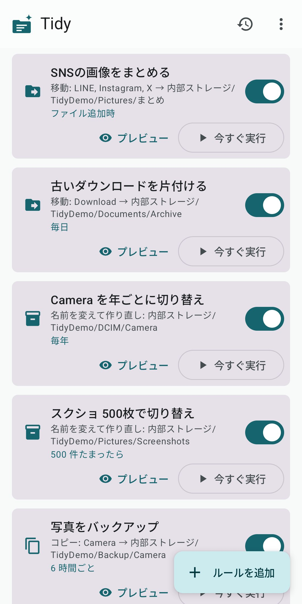
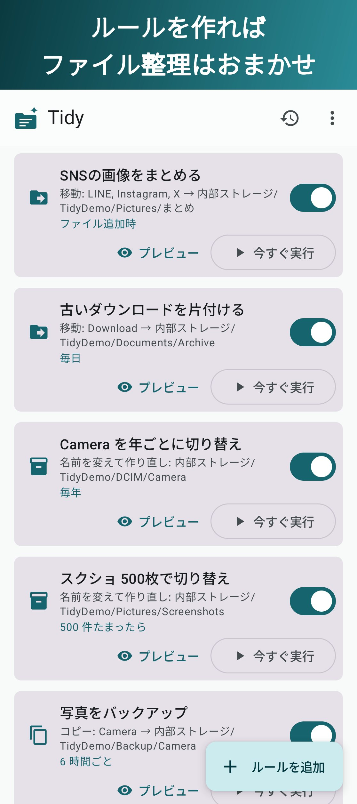
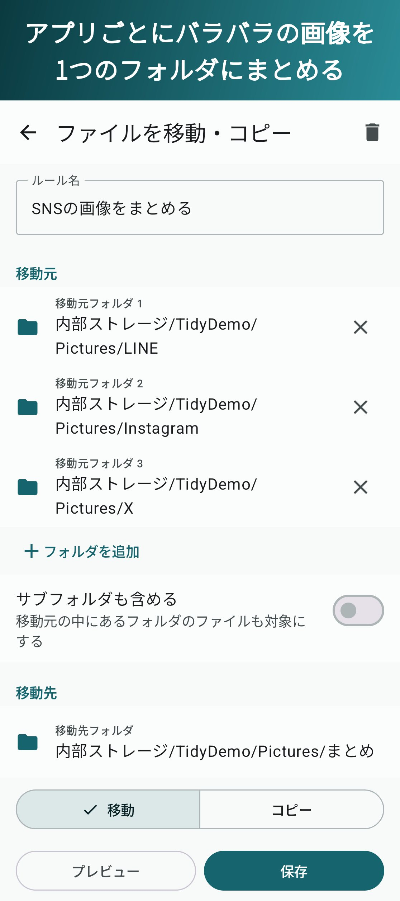
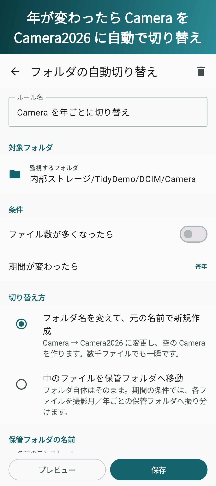
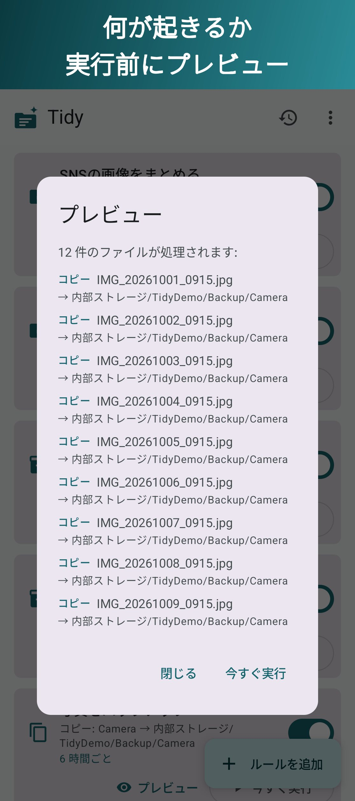
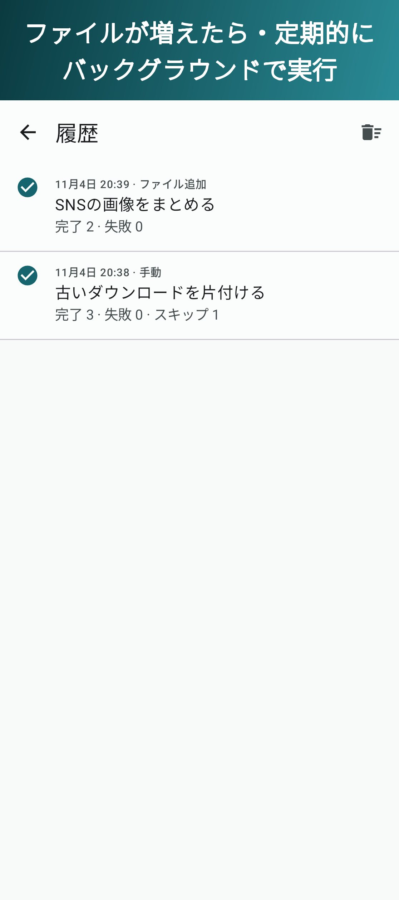
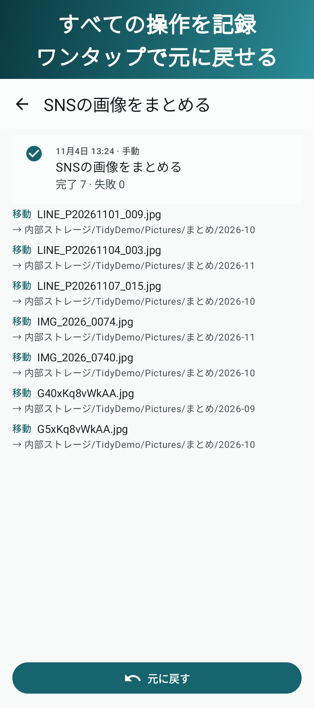

スマホのファイルを、ルールで自動整理
アプリごとに画像の保存先がバラバラ、Cameraフォルダに何千枚もたまって開くのが遅い、Downloadが散らかっている——そんな悩みを、一度ルールを作るだけで解消します。ファイルが増えたら数秒後に、または定期的に、Tidyがバックグラウンドで片付けます。

ルールは2種類。組み合わせて、フォルダをすっきり保ちます。
Pictures/LINE・Pictures/Instagram・Pictures/X → Pictures/まとめ/2026-11。ファイルが保存されたら数秒後に移動。
DCIM/Camera を Camera2026 に名前変更して、空の Camera を作成。数千枚あっても一瞬。
Screenshots が1000枚になったら Screenshots_20261104 に切り替え。表示が重くなる前に。
Download の30日以上前のPDFを、毎日 Documents/Archive/2026 へ。
任せきりにできて、いつでも確かめられる。
複数のフォルダ(サブフォルダも可)から1か所へ。種類・拡張子・ファイル名のパターン・「○日以上前」で絞り込み、日付ごとのフォルダに自動で振り分け。
年・月が変わったら、またはファイル数が多くなったら。名前を変えて作り直すか、中のファイルを月・年ごとの保管フォルダへ移すかを選べます。
ファイルが追加されてから数秒後、または15分〜毎日の定期実行。常駐通知は出さず、電池にもやさしい仕組みです。
どのファイルがどこへ行くのか、実行する前に一覧で確認できます。
すべての操作を履歴に記録。移動もフォルダの切り替えも、ワンタップで元に戻せます。
日本語・English・Español・Français・ภาษาไทย・Tiếng Việt・简体中文・繁體中文・한국어。






機能はすべて無料版でも使えます。ルールをたくさん作りたい方にProを用意しています。
ファイルは、あなたのスマホの外に出ません。